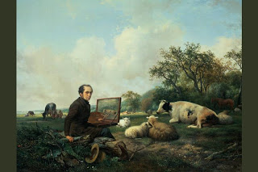

Bava Kamma 80 - Settlement of the Land of Israel

The Rabbis wished to facilitate the Jewish settlement of the Land of Israel. They prohibited raising small domesticated animals, such as sheep and goats, in Israel - since they tend to wonder off in search of grazing and destroy the vegetation in the peoples' fields.
It is allowed to keep sheep and goats needed as sacrifices for 30 days prior to festivals. Butchers have similar allowances. It is not prohibited to raise large domesticated animals like cows in Israel, because it is hard to import them.
A door closed on person's success will not speedily be opened except with prayer and self-improvement.